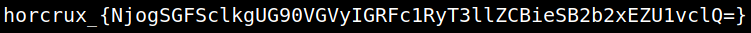
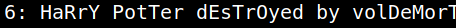

5.1 Getting the first flag
1. Run the following on the “reverse shell”.
cat horcrux1.txt
Output:

2. Let's decode it. On your Kali Machine run the following command
$echo 'NjogSGFSclkgUG90VGVyIGRFc1RyT3llZCBieSB2b2xEZU1vclQ=' | base64 --decode
Output:
